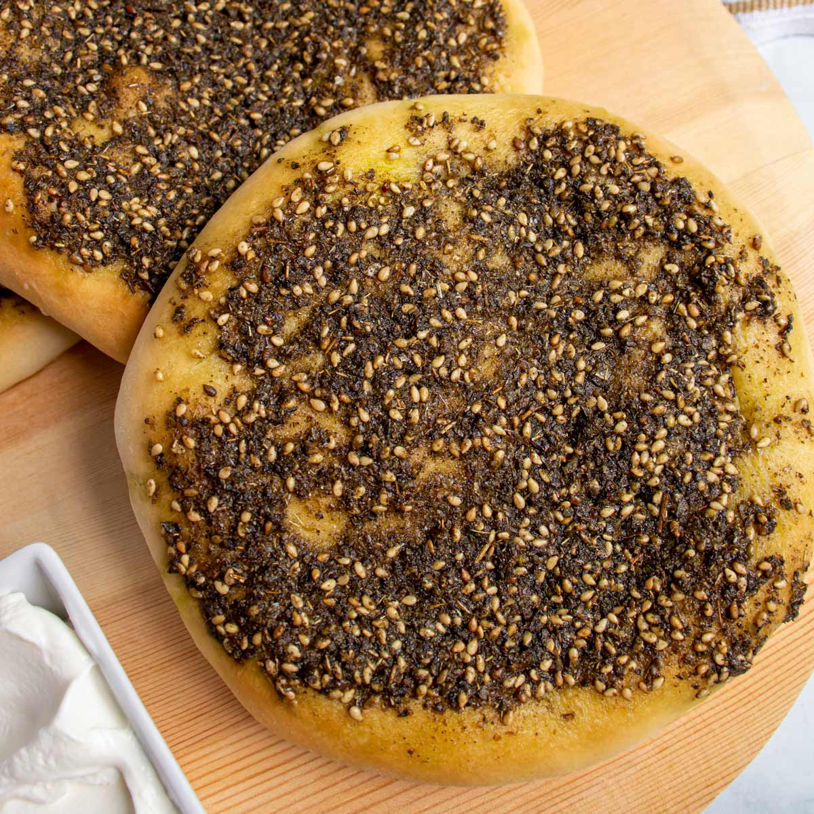

Za'atar Bread

Description
This recipe is for a traditional Lebanese flat bread topped with fresh za'atar, which is a thyme-based spice mixture.
Ingredients
- 3 cups warm water
- 1 0.25oz package yeast
- 1 teaspoon salt
- 1 teaspoon white sugar
- 8 cups all-purpose flour
- 2 cups whole wheat flour, or more if needed
- 2 cups olive oil
- 1 cup corn oil
- 2 cups fresh za'atar
Steps
- Preheat oven to 350 degrees F (175 degrees C).
- Mix water, yeast, salt, and sugar together in a large bowl. Add all-purpose flour, whole wheat flour, olive oil, and corn oil; mix using your hands, adding more whole wheat flour if needed, until dough holds together. Mix za'atar into dough until evenly incorporated.
- Shape dough, about 1/4 cup per piece, into rounds on a floured work surface. Arrange rounds on baking sheets.
- Bake in the preheated oven until lightly browned, about 25 minutes.